Four principles and where the code implements them
Minimal technical options
All infrastructure as code
No load on the main server
 APIaccept, query
APIaccept, query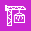
CodeBuildcdk deployNo API server polling
Helpful failures
Seven questions define one app


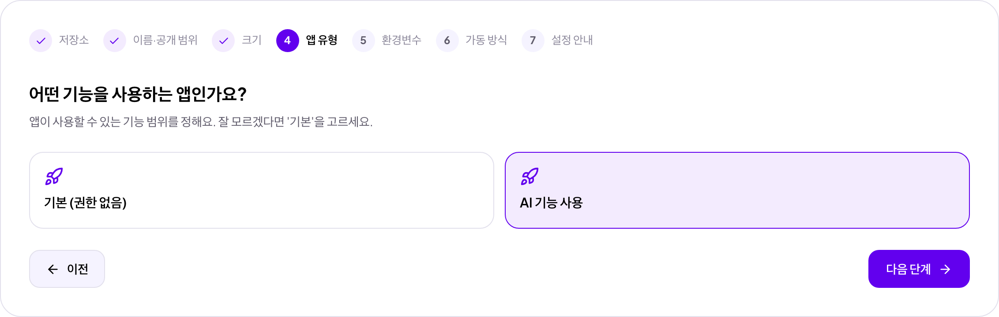
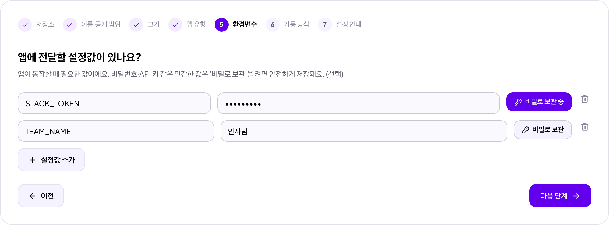
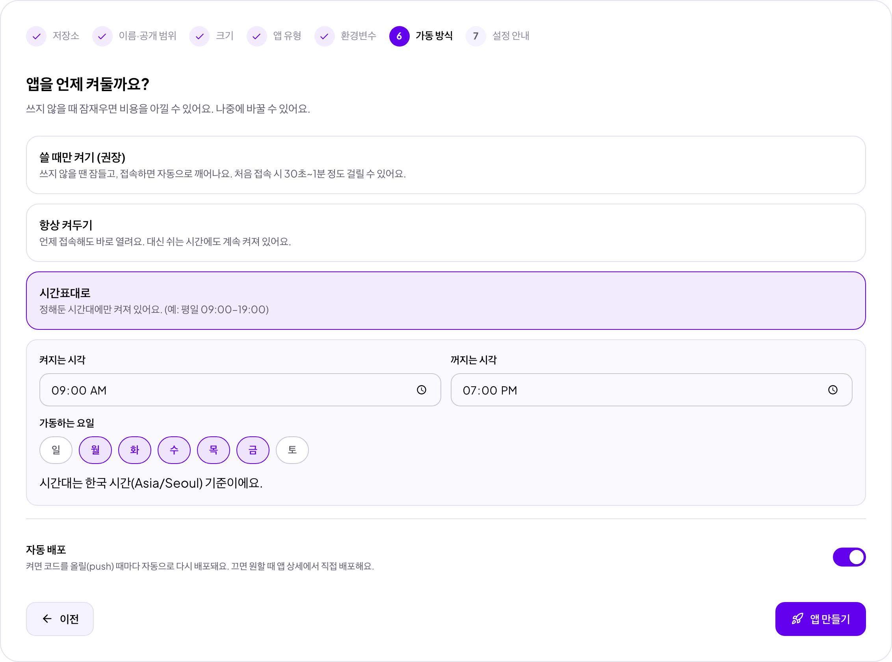
Each app is managed through Overview, Deployments, Monitoring and Settings tabs

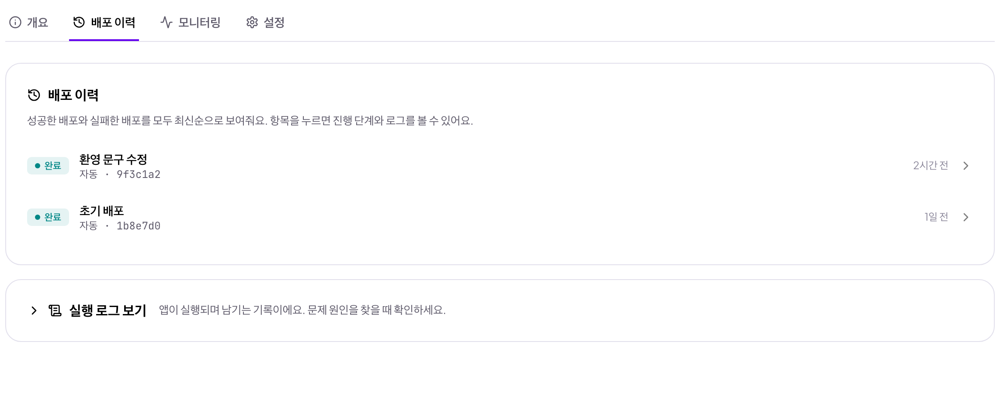
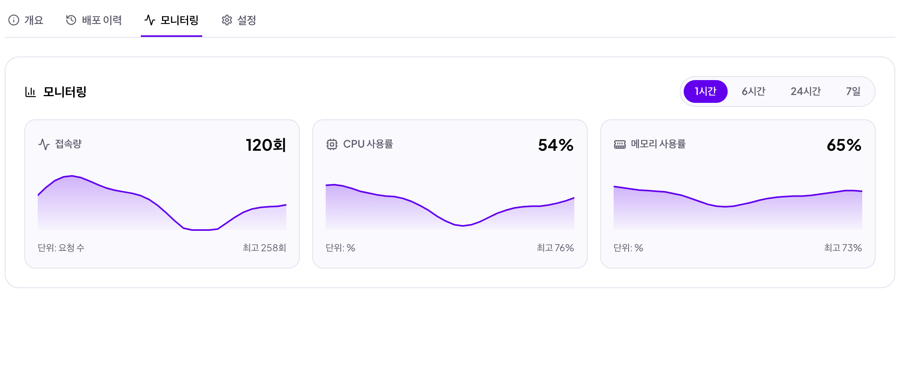

- Logs: CloudWatch Logs
/apphub/{stage}/app/{appId} - Metrics: one
GetMetricDatacall - ALB RequestCountPerTarget, ECS CPU/Memory - Sleeping apps return empty series
Four app actions and what they actually do
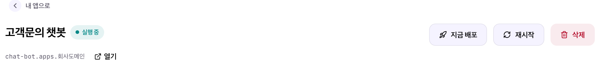
| Button | What the user sees | What happens internally |
|---|---|---|
| 1 Deploy now | Accepted immediately, no confirmation "Pending" added to deploy history | Re-runs the app's pipeline from the start → fetch latest code, check, build new image, deploy. Takes minutes; leaves a (manual) deploy record |
| 2 Restart | "Restarting the app. Refresh in about a minute." | Keeps code and image; replaces only the running servers (ECS forceNewDeployment). No build, no deploy record. Not available while sleeping |
| 3 Delete | Delete button enables only after typing the exact app name | App becomes "Deleting"; AWS resources removed runtime first, then build. Then secrets deleted, URL and load balancer slot released, app record deleted. Irreversible |
| 4 Roll back | Confirmation: "No rebuild, so it applies quickly" | Checks the image from that deploy (commit SHA) still exists → redeploys only the runtime with that image. Fast because build is skipped. Only the latest 5 images are kept |

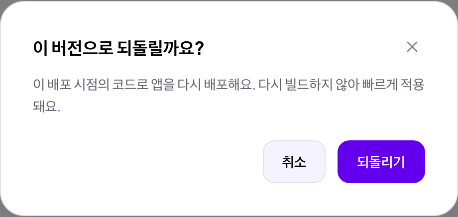
Failures sorted into 7 types, with the exact prompt to give Kiro
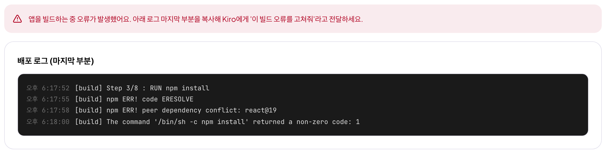

| Failure type | Where it failed | On-screen guidance (what to tell Kiro) |
|---|---|---|
| DOCKERFILE_MISSING | Static check - no Dockerfile | Ask "Prepare this app for the deploy standard", then push |
| DOCKERFILE_INVALID | Static check - port, forbidden items | "Match the deploy standard (port 8080, /health response)" |
| BUILD_FAILED | Image build | Copy the log tail: "Fix this build error" |
| HEALTHCHECK_FAILED | Trial run - no response within 60s | "Add a 200 response on /health" |
| DEPLOY_FAILED | Runtime deployment | New version failed → automatically reverted to previous |
| SOURCE_UNAVAILABLE | Repository access | Check connection status under "Repositories" |
| INTERNAL_ERROR | Anything else | Platform-side issue - contact the administrator |
failureReason)
Admin onlyDetailed cause (failureDetail) - ARNs and secrets masked, 500 chars max
Repository connection and Kiro deploy-standard setup, guided on screen

Repository connection
- AWS repository (CodeCommit) - ready to use; create new repositories from the console
- Repository names auto-assigned as
{owner}-{name}; users see only their own - GitHub, GitLab - supported in code, disabled in current config
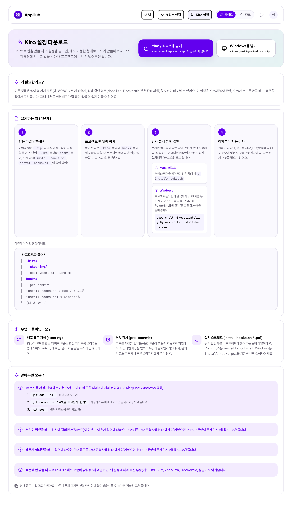
Kiro config download
- Two zips, Mac and Windows - download directly from the web
- Contents: deploy standard rules (steering), commit checks (pre-commit), install script
- Unzip → copy into project → install once → every commit is checked
Admins define the choices users can pick from
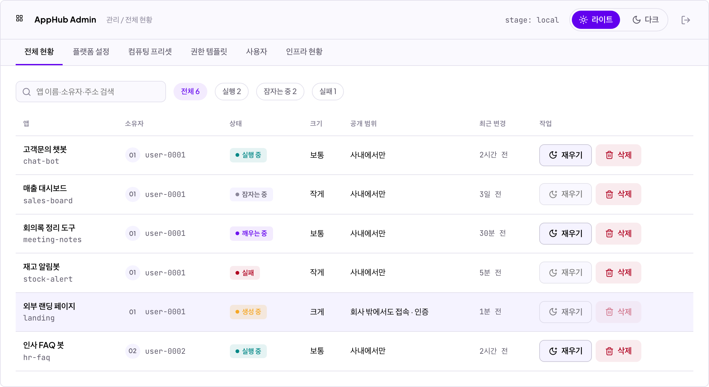
admin group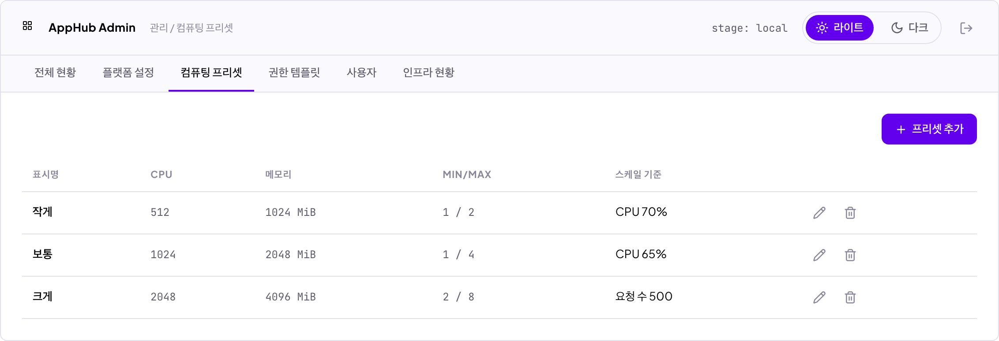
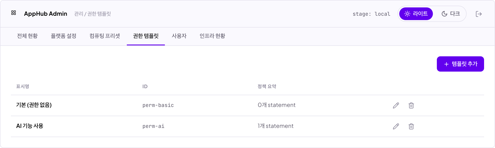
Three layers - platform installed once, pipeline and runtime created per app
 or
or
Internal ALB (private)

 Lambda, apiPython 3.13 / boto3
Lambda, apiPython 3.13 / boto3
 ECRTag = commit SHA
ECRTag = commit SHA CloudFormationruntime stack
CloudFormationruntime stack Route 53public / private zone
Route 53public / private zone
 Secrets ManagerInjected as ECS secrets
Secrets ManagerInjected as ECS secrets CloudWatchIdle alarm, logswaker, sleep, restoreSleep / wakeEB SchedulerTriggers sleep at end time
CloudWatchIdle alarm, logswaker, sleep, restoreSleep / wakeEB SchedulerTriggers sleep at end timeFour CDK stacks - 2 shared, installed once by the admin; 2 per app, created by the platform (+ alb on scale-out)
- VPC (default 10.20.0.0/16, --vpc-cidr), 2 AZs, 1 NAT
- 2 shared ALBs (internet / internal), extra stack added at limit
- Shared ECS cluster
- Wildcard ACM, 2 Route 53 zones
- 3 SGs (4 in private mode), 3 Waker Lambdas
- Cognito (admin invite only)
- DynamoDB, API GW + Lambda
- 2 Step Functions, 2 task Lambdas
- SPA (public: CloudFront+S3 / private: internal ALB+ECS), asset bucket
- provisioner CodeBuild, deploy-notify
- ECR (scan on push, keep latest 5)
- CodeBuild validate-build (privileged)
- CodeBuild deploy
- 3-stage CodePipeline
- Artifact bucket (30-day expiry)
- ECS service, task (preset size)
- Target Group :8080 /health
- Listener rule (host-header)
- Route 53 A alias, Task Role
- Idle alarm, Scheduler (by mode)
/apphub/{stage}/network/*, /platform/* instead of CloudFormation exportsbin/apphub.ts - platform mode by default; -c appId + appStackKind synthesizes app stacksapphub-{stage}-*, stage = dev | prod. App deletion = runtime, then pipelineOne shared ALB per visibility; apps are told apart by host name
Public hosted zoneAlso registered in private zone for internal lookup
internet-facing ALB0.0.0.0/0The only SG allowed to be fully open
Private hosted zoneinternal ALB--internal-cidrsVPC CIDR if not set
*.{appsDomain} ACM certDefault action 404 "No app for this host", :80 → 301 HTTPS
{sub}.{appsDomain} → [optional] authenticate-cognito → forwardTarget Group → Fargate/health 200, 15s intervalTask SG: 8080 ← ALB SG reference only
sample-streaming)cognitoProtect - on by default for internet apps (unavailable in internal-only installs). Dedicated login client per app. Auth stays on while sleepingruleCount tracked per ALBInternal access ranges are set at install with
--internal-cidrs "10.0.0.0/8,…" (VPC range only if not set)
Ten steps from "Create app" to a reachable URL
POST /apps → validation chain (subdomain, allowed repo, preset, connection, quota) → reserve subdomain, store secrets
api LambdaRuns ProvisionApp. Execution name = appId → no duplicate runs
Pick ALB by visibility, atomically bump rule priority, ruleCount +1 (reused on retry)
Start provisioner build: cdk deploy …-pipeline (ECR, 2 CodeBuild, CodePipeline)
Checks every 30s. Failure → FinalizeFailure → FAILED
AWS runs the pipeline on creation. FirstDeploy intentionally does nothing (avoids duplicate history)
Static check → docker build → /health smoke test → ECR push (tag = commit SHA)
validate-build, ECRcdk deploy …-runtime: ECS service, TG, listener rule, DNS, alarm/schedule
CloudFormationPipeline events → deploy history updated. On success CREATING→ACTIVE, RUNNING
deploy-notifyhttps://{sub}.apps.{domain} shows "Running" on the dashboard
Route 53, ALBSource → ValidateBuild → Deploy; where it fails defines the failure type
- CodeCommit or CodeConnections
- Auto deploy on: push trigger
- Off: only via "Deploy now"
| 1 Static check | Platform validator (fetched from S3): Dockerfile exists, EXPOSE 8080, forbidden items | DOCKERFILE_MISSING DOCKERFILE_INVALID |
| 2 Build | docker build | BUILD_FAILED |
| 3 Smoke | docker run → curl /health 2s × 30 (60s), expects 200 | HEALTHCHECK_FAILED |
| 4 Push | ECR push, tag = commit SHA → image-tag.json |
- Reads app, preset, permission template from DynamoDB
- First deploy detected by stack existence → desiredCount set only on first deploy. Sleeping apps: ALB rule pointed back to app TG before deploy, put back to sleep after
cdk deploy …-runtime, CloudFormation rollback on failure- DEPLOY_FAILED
-runtime stackZero tasks when unused; starts automatically on the first request
Idle alarm: < 1 request per target, 5 min × 3 (15 min) + stuck-alarm sweep every 15 min - 15 min grace after waking
or schedule end, admin sleep
Matches alarm name prefix apphub-{stage}-app- + 15-min sweep (2 shared rules)
① desiredCount → 0
② listener rule forward target → waker TG
③ runtimeState = SLEEPING
Visit {sub}.apps… → rule forwards to waker TG
Host → subdomain → appId → desiredCount = min (≥1), WAKING
Always returns a 200 waiting page (auto-refresh every 5s)
ECS Task State Change event (appId taken from group)
Forward target → back to app TG
runtimeState = RUNNING
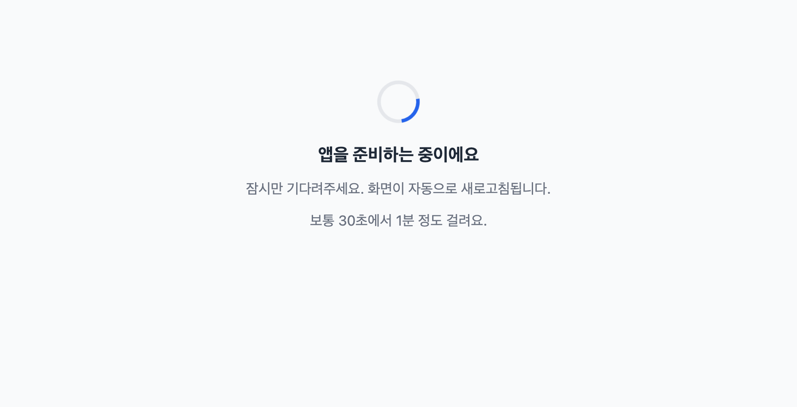
ecs:updateService; restore handles the rule switch